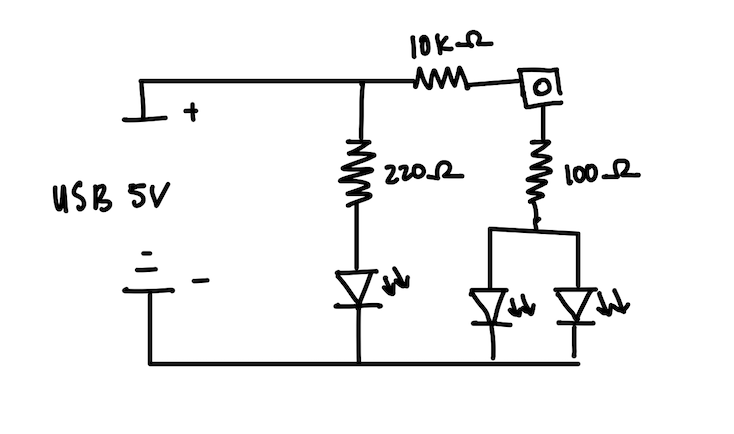
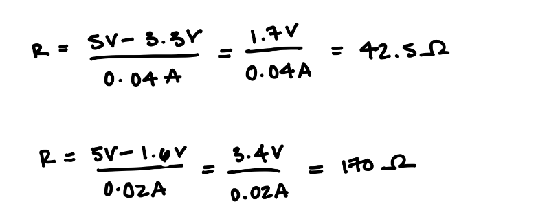
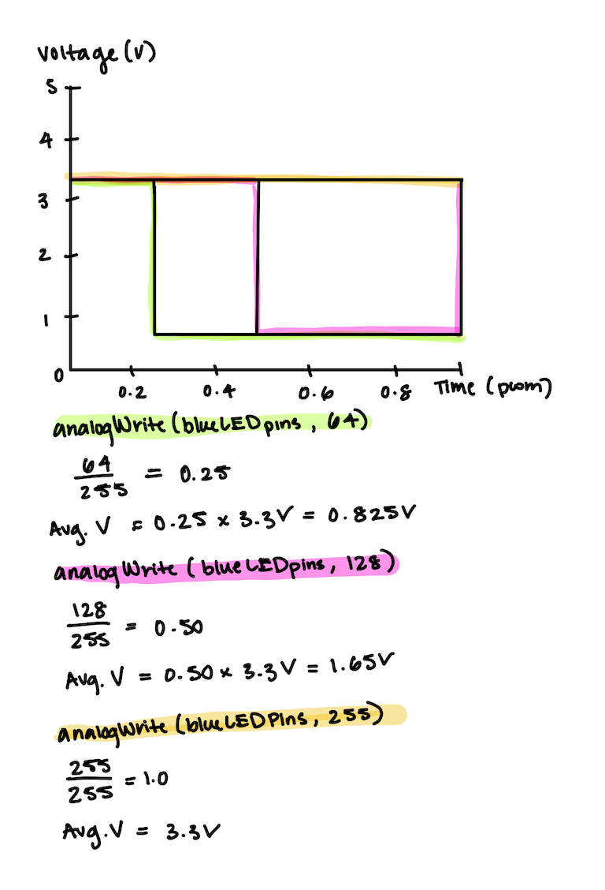

I began my assignment by first drawing out schematics before starting on my circuit.
The green light was pinned to 9, the blue lights were pinned to 6, and the button was pinned to 4. The Arduino operates on a 5V power supply, so I used this as my starting point to start my calculations.
Since I have two blue LEDs in parallel, each LED receives half of the total current flowing through the resistor. If my total desire current is 40mA, and I used a 100 ohm resistor, then my current is limited to 15 mA. This is a safe choice that keeps the current below the maximum 20 mA rating per LED. I chose a 220 ohm resistor for my green LED because that would limit my current to 15.25 mA. This also safely protects the LED from overcurrent. I used a 10k resistor for but button because it provides a good balance between power consumption and noise immunity. Lower resistance would draw more current unnecessarily while higher resistance might be less effective in ensuring stable logic levels.
This was how I built my circuit with 1 constantly fading light, and two other lights being controlled by a button, also showing a fading pattern when button is remained pressed.

Like mentioned above, the resistors I chose for the circuit were 100 ohms for the blue LEDs, 220 ohms for the green LED, and 10k for the button. If the resistor value was too low, the LEDs could draw too much current and potentially burn out. A higher resistance would result in dimmer LEDs.
Below is the code I created to run my circuit:
// Pin connection numbers
const int greenLEDPin = 9; // Pin connected to Green LED
const int blueLEDPins = 6; // Pin connected to Blue LEDS
const int buttonPin = 4; // Pin connected to Button
// Variables for fading
int fadeValue = 0; // Initial brightness of LED
int fadeAmount = 5; // Change in brightness for fading
void setup() {
pinMode(greenLEDPin, OUTPUT);
pinMode(blueLEDPins, OUTPUT);
pinMode(buttonPin, INPUT_PULLUP);
}
void loop() {
if (digitalRead(buttonPin) == LOW) { // Button is pressed
// Fade in and out the blue LEDs
for (int fadeValue = 0; fadeValue <= 255; fadeValue += fadeAmount) {
analogWrite(blueLEDPins, fadeValue); // Brighten Blue LEDs
analogWrite(greenLEDPin, 255); // Keep Green LED at full brightness
delay(30); // Delay for fading effect
}
for (int fadeValue = 255; fadeValue >= 0; fadeValue -= fadeAmount) {
analogWrite(blueLEDPins, fadeValue); // Dim Blue LEDs
analogWrite(greenLEDPin, 255); // Keep Green LED at full brightness
delay(30); // Delay for fading effect
}
} else { // when button is not pressed
// Fade in and out the red LED
for (int fadeValue = 0; fadeValue <= 255; fadeValue += fadeAmount) {
analogWrite(greenLEDPin, fadeValue); // Brighten Green LED
digitalWrite(blueLEDPins, LOW); // Off Blue LEDs
delay(30); // Delay for fading effect
}
for (int fadeValue = 255; fadeValue >= 0; fadeValue -= fadeAmount) {
analogWrite(greenLEDPin, fadeValue); // Dim Green LED
digitalWrite(blueLEDPins, LOW); // Off Blue LEDs
delay(30); // Delay for fading effect
}
}
}
Here is a video of my circuit in action:

The green light is fading in and out, and when the button is pressed, and remains pressed, the blue lights begin fading in and out.
(1) Graph of LEDs
(2) Given my schematic, circuit, and firmware, assuming the only thing that draws current is your LEDs, my circuit would run for approximately 40 hours if powered by a 1200 mAh battery.